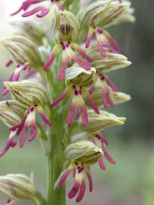

<table style="width: 100%">
        <tr>
            <th> flawer type</th>
            <th> descreption</th>
        </tr>
        <tr>
            <th> sachlav </th>
            <th> the sachlav are especially common in tropical areas, but orchids can be found in nature in most of the world</th>
        </tr>
        <tr>
        <th> <a href="index.html"> to go back </a> </th>
        </tr>
        
        </table>